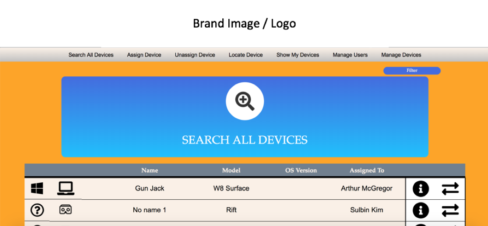

DEVICE MANAGER
This studio project was for a local industry based client who required a responsive application for tracking and locating company devices used for internal testing of software developed.
The clients current system was a redundant manual process which was providing a non-effective way to track and locate devices.
Technologies used for this project: HTML5, CSS3, JS, Python, Flask
User Interface / User Experience Design

The above image is from the main landing page following login. One of the key user stories was to be able to search using a filter system a device within the database to either assign or unassign to a user.